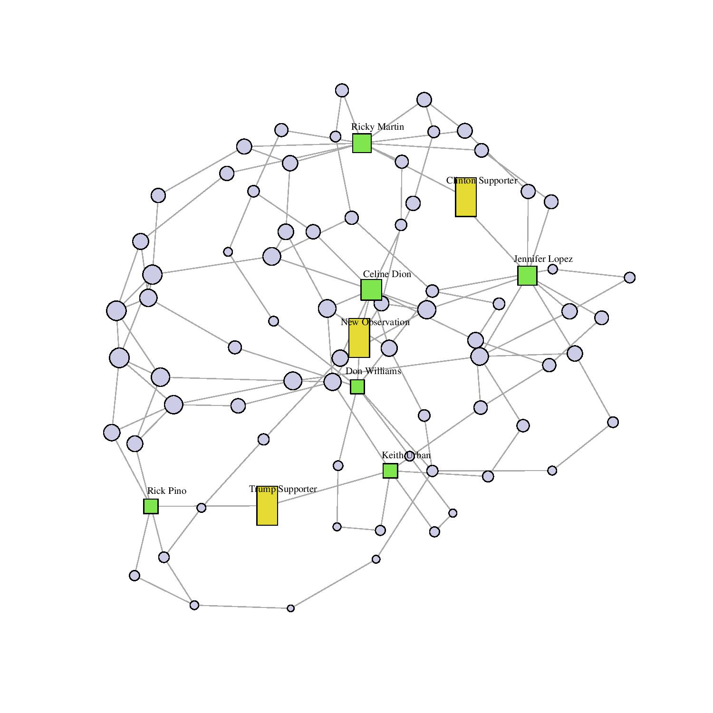
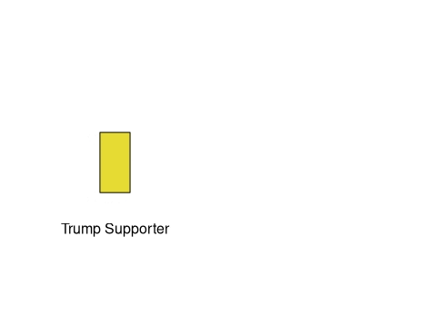

Does culture affect political behavior? Many people would say yes. The problem is that it is difficult to define what the culture is and study how it works. The difficulties in measurement can lead to arbitrary, biased, and inefficient estimates, when left to be solved with human hands.
But what if there is a machine learning algorithm devoted to learning and classifying the human culture? One such algorithm kept improving for years with millions of new data points every day. Spotify has it.

Music preference incorporates multidimensional, latent cultural traits. Spotify recommendations does, as well. But how do we get the access to that secret recipe?
Spotify recommendations are a function of the data Spotify has and the algorithm Spotify uses to analyze them. Because Spotify recommendations are publicly available, they can be used to infer how Spotify analyzed its private data.
The starting point is to mine the Spotify recommendations. These recommendations form a network of music tracks.
But how do we use this network? If culture affects political decisions, the musical style of a Trump supporter's favorite musician might differ from a Clinton supporter's. Then it will take many "chains" of recommendations (edges) to reach one from the other. In the case of the example below, this is the distance between Keith Urban and Jennifer Lopez.

Spotify API (and its Python port, "Spotipy") returns 100 recommended tracks when provided with a track, an album, or an artist. The first input was Billboard "Greatest of all Time" chart which covers divers selection of albums. Artists covered include Taylor Swift, Eminem, Michael Jackson, and the Beatles. From there, the recommended tracks become exponentially large. Theoretically, it could reach 2 million tracks with just two iterations of recommendations! But the actual number goes down because there are duplicate recommendations.
My current collection covers 900,000 tracks and artists (vertices) and 15,000,000 connections between them (edges). These vertices are connected with Facebook users who like a politician, who also happens like a musician.
The Proportion of Shared Tracks between Different Partisans. The numbers are the proportion of row-partisan songs being in the column-partisan's network. For example, 31.2% of Trump supporters' tracks are also in Cruz supporters' track network. Each network is the smallest possible network for including each group of the partisan Facebook users in the database. Notice that Sanders supporters hardly likes Trump supporters' music, even after accounting for the difference in network magnitude.
| Trump | Sanders | Clinton | Cruz} | Trump | 1 | 0.102 | 0.175 | 0.312 |
| Sanders | 0.04 | 1 | 0.181 | 0.217 |
| Clinton | 0.063 | 0.164 | 1 | 0.251 |
| Cruz | 0.082 | 0.144 | 0.185 | 1 |